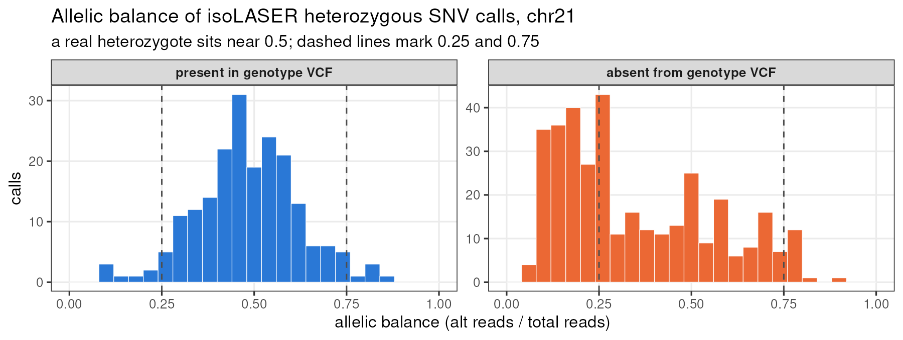

Last updated: 2026-09-23
Checks: 6 1
Knit directory: long_read_rna/
This reproducible R Markdown analysis was created with workflowr (version 1.7.1). The Checks tab describes the reproducibility checks that were applied when the results were created. The Past versions tab lists the development history.
The R Markdown is untracked by Git. To know which version of the R
Markdown file created these results, you’ll want to first commit it to
the Git repo. If you’re still working on the analysis, you can ignore
this warning. When you’re finished, you can run
wflow_publish to commit the R Markdown file and build the
HTML.
Great job! The global environment was empty. Objects defined in the global environment can affect the analysis in your R Markdown file in unknown ways. For reproduciblity it’s best to always run the code in an empty environment.
The command set.seed(20260908) was run prior to running
the code in the R Markdown file. Setting a seed ensures that any results
that rely on randomness, e.g. subsampling or permutations, are
reproducible.
Great job! Recording the operating system, R version, and package versions is critical for reproducibility.
Nice! There were no cached chunks for this analysis, so you can be confident that you successfully produced the results during this run.
Great job! Using relative paths to the files within your workflowr project makes it easier to run your code on other machines.
Great! You are using Git for version control. Tracking code development and connecting the code version to the results is critical for reproducibility.
The results in this page were generated with repository version 5998ecc. See the Past versions tab to see a history of the changes made to the R Markdown and HTML files.
Note that you need to be careful to ensure that all relevant files for
the analysis have been committed to Git prior to generating the results
(you can use wflow_publish or
wflow_git_commit). workflowr only checks the R Markdown
file, but you know if there are other scripts or data files that it
depends on. Below is the status of the Git repository when the results
were generated:
Untracked files:
Untracked: analysis/isolaser_variants.Rmd
Unstaged changes:
Modified: analysis/index.Rmd
Note that any generated files, e.g. HTML, png, CSS, etc., are not included in this status report because it is ok for generated content to have uncommitted changes.
There are no past versions. Publish this analysis with
wflow_publish() to start tracking its development.
isoLASER’s first step is variant and haplotype calling: everything downstream — read phasing, allele-specific splicing — rests on those variants being real. We have independent genotypes for the same four donors, so we can check.
The short version: where the genotype data can adjudicate, isoLASER is accurate. But most of its calls are at sites the genotype data does not contain, and those look like sequencing error. Two configuration problems in how we ran it probably explain much of that.
| isoLASER calls | chr21 only, four donors, per-donor gVCFs |
| Genotype data | /project/xinhe/lifan/neuron_stim/zicheng_100lines_all_snp_sorted.vcf.gz |
| Genotyping | Michigan Imputation Server, TOPMed r2 panel, minimac4 + eagle |
| chr21 content | 105,897 SNP sites — 60,284 directly genotyped, 45,613 imputed |
Two things checked before comparing anything:
Genome build. The genotype VCF is GRCh38, verified against known SNP positions rather than taken from the header — rs429358 at chr19:44,908,684, rs7412 at 44,908,822, rs4988235 at chr2:135,851,076, all exact hg38 matches. Same build as the long-read data.
Donor identity. All four donors are in the VCF. Its
100 samples are 58 named CD_xx and 42 named
CW#####; ours are CD_21, CD_31, CD_36 and CD_48.
The VCF ships without an index, so we index a symlink in our own directory and write nothing to the shared folder.
chr21, PASS calls, after collapsing duplicate records (see the note at the end of this section).
| donor | SNVs called | in genotype VCF | absent | % in VCF |
|---|---|---|---|---|
| CD_21 | 206 | 76 | 130 | 36.9 |
| CD_31 | 166 | 72 | 94 | 43.4 |
| CD_36 | 133 | 54 | 79 | 40.6 |
| CD_48 | 176 | 87 | 89 | 49.4 |
| all | 681 | 289 | 392 | 42.4 |
Under half. The split by match type is what matters next:
| match | n |
|---|---|
| absent | 392 |
| same site, same alleles | 289 |
Zero allele mismatches. Every isoLASER SNV that lands on a genotype-VCF position agrees on REF and ALT exactly. No strand flips, no REF/ALT swaps, no coordinate offset — which independently confirms the two datasets are on the same build and coordinate convention.
Of the 289 matches, 206 are directly genotyped and 83 imputed; 273 have R2 ≥ 0.8.
Two notes on what is not in this table. isoLASER also called 75 PASS indels, none of which appear in the VCF — but that file is SNP-only, so there is nothing to match against and 0% is uninformative. And every PASS SNV already has DP ≥ 10 (median 20), because isoLASER applies that floor itself, so a depth filter changes nothing here.
A quirk worth knowing: isoLASER emits one record per
gene, so a variant in two overlapping genes appears twice with
different read subsets. At chr21:36,156,814 in CD_21 the same G>A
appears as 1|0 with DP 10 under DOP1B and 0|1
with DP 22 under CBR3-AS1 — opposite phase, because phasing is per-gene.
Only 3 positions across all four donors, but do not count gVCF rows as
variants.
Restricting to the 276 calls at sites present in the VCF with R2 ≥ 0.8:
| n | % | |
|---|---|---|
| genotype confirms, identical genotype | 249 | 90.2 |
| genotype says hom-ref | 17 | 6.2 |
| variant confirmed, genotype differs | 10 | 3.6 |
Concordance among sites carrying an alt allele: 96.1%.
| genotype VCF ↓ / isoLASER → | het | hom-alt |
|---|---|---|
| hom-ref | 16 | 1 |
| het | 174 | 3 |
| hom-alt | 7 | 75 |
The 7 hom-alt sites called het are the expected RNA failure mode — some reference-allele reads present, whether from mismapping or imputation error.
392 calls have no genotype-VCF record. The innocent explanation is that an array-plus-imputation panel lacks rare variation. Allelic balance argues otherwise: a genuinely heterozygous site sits near 0.5 regardless of how rare it is.

Allelic balance of isoLASER heterozygous SNV calls on chr21.
| present in VCF | absent from VCF | |
|---|---|---|
| het calls | 201 | 352 |
| median allelic balance | 0.48 | 0.28 |
| % with AB < 0.25 or > 0.75 | 6.0 | 44.9 |
The left panel is what heterozygotes should look like. The right panel is not.
Two further signatures point the same way. The base-change spectrum is skewed:
| substitution | % of confirmed | % of absent |
|---|---|---|
| C>T / G>A | 35.9 | 52.0 |
| A>G / T>C | 38.9 | 17.1 |
| A>T / T>A | 2.7 | 13.5 |
In real human variation C>T and A>G are comparable; a 3:1 skew toward C>T is an error signature, not biology. And the calls cluster spatially — the chr21 29 Mb and 33 Mb bins are 91% and 85% unconfirmed, against 29% in the 46 Mb bin.
An allelic-balance filter of [0.25, 0.75] removes 45% of the unconfirmed calls (352 → 194) while keeping 96% of the confirmed ones. That is the cheapest available improvement and needs no re-run.
This is inference from allelic balance, not proof. A dbSNP or gnomAD lookup is what would separate “rare real variant” from “error” definitively, and we have not run one.
Taking it from the other direction — genotype sites that are directly genotyped, well imputed, non-reference, and inside a region isoLASER could call (a REF_BLOCK or a variant at depth ≥ 10):
| n | |
|---|---|
| sites isoLASER could have called | 276 |
| sites isoLASER did call | 193 (69.9%) |
| missed | 83 |
All 83 misses sit inside REF_BLOCKs with median depth 26. isoLASER did not run out of reads; it looked at those positions and called them homozygous reference. 32 of the 83 are hom-alt in the genotype data, which is the harder group to explain.
Checked, not run. The answer is a qualified no.
The variant caller takes no VCF.
isolaser accepts a BAM, a genome FASTA and a transcript
database. There is no option to supply known sites.
isolaser_joint does take one —
-v — and it uses it in exactly the two ways that would help
us:
But the rescue path reads a per-sample AB FORMAT
field and matches samples by name. It is designed for
isoLASER’s own merged gVCF (GT:AB:AC:AD:DP:GQ:PGT:PL), not
a genotype panel — ours carries GT:DS:HDS:GP and has no
AB. The whole branch sits inside a bare
except Exception, so passing an incompatible VCF fails
silently: the whitelist filtering still works, the
rescue quietly does nothing.
Using our genotypes properly would mean converting them — subset to
the four donors and to sites where at least one carries an alt allele,
rename samples to match the fofn, and synthesise an AB
field. Workable, but it is a hack against an undocumented internal
format.
The simpler route is post-hoc filtering, which is what this page already does: intersect isoLASER’s output with the panel and apply an allelic-balance cut. No code changes, no re-run, and the effect is measurable.
Both found while checking the above. Neither has been fixed.
We used the PacBio error model on Nanopore data.
isolaser --platform defaults to PacBio, and it
selects the trained classifier used to call variants —
GM12878_PBSQ2_F1.pickle for PacBio,
GM12878_ONT_ROC.pickle for Nanopore. The command recorded
in every gVCF header shows no --platform flag, in the pilot
and in all four per-donor runs. A caller tuned for PacBio error rates
will be too permissive on ONT reads, which is a direct candidate
explanation for the low-allelic-balance calls in section 4.
The joint step’s sample names never matched, so the rescue
silently did nothing. We did not pass
-s/--sample-name to isolaser, so the merged
gVCF carries full BAM paths as sample names
(/project/…/CD_21.annot.sorted.bam) while the fofn uses
CD_21. The lookup in isolaser_joint matches on
exact sample name, fails, and the exception is swallowed. The REF_BLOCK
rescue has therefore never run in any of our joint analyses.
Fixing both is a re-run with --platform Nanopore and
-s CD_21 (etc.), which is cheap — chr21 took minutes.
Re-running this validation afterwards would show directly whether the
platform model is the cause.
| Purpose | File |
|---|---|
| Index genotype VCF, verify build | 8.isolaser_validation/1.index_and_check_build.sbatch |
| chr21 genotypes for the four donors | 8.isolaser_validation/2.extract_chr21_genotypes.sh |
| Precision / concordance / sensitivity | 8.isolaser_validation/3.compare_variants.R |
| Diagnose unconfirmed calls | 8.isolaser_validation/4.diagnose.R,
5.diagnose2.R |
| Overlap summary | 8.isolaser_validation/7.overlap_summary.R |
| Allelic-balance figure | 8.isolaser_validation/8.plot_ab.R |
| Per-variant results | 8.isolaser_validation/out/isolaser_variants_in_genotype.tsv |
| Concordance detail | 8.isolaser_validation/out/isolaser_vs_genotype_snvs.tsv |
| Missed genotype sites | 8.isolaser_validation/out/genotype_sites_in_callable_region.tsv |
Related pages: isoLASER per donor, splicing candidates.
R version 4.2.0 (2022-04-22)
Platform: x86_64-pc-linux-gnu (64-bit)
Running under: Red Hat Enterprise Linux 8.4 (Ootpa)
Matrix products: default
BLAS/LAPACK: /software/openblas-0.3.13-el8-x86_64/lib/libopenblas_skylakexp-r0.3.13.so
locale:
[1] LC_CTYPE=C.UTF-8 LC_NUMERIC=C LC_TIME=C.UTF-8
[4] LC_COLLATE=C.UTF-8 LC_MONETARY=C.UTF-8 LC_MESSAGES=C.UTF-8
[7] LC_PAPER=C.UTF-8 LC_NAME=C LC_ADDRESS=C
[10] LC_TELEPHONE=C LC_MEASUREMENT=C.UTF-8 LC_IDENTIFICATION=C
attached base packages:
[1] stats graphics grDevices utils datasets methods base
other attached packages:
[1] knitr_1.51 data.table_1.14.4 workflowr_1.7.1
loaded via a namespace (and not attached):
[1] Rcpp_1.1.1-1.1 bslib_0.3.1 jquerylib_0.1.4 compiler_4.2.0
[5] pillar_1.9.0 later_1.3.0 git2r_0.30.1 tools_4.2.0
[9] getPass_0.2-2 digest_0.6.29 jsonlite_2.0.0 evaluate_0.15
[13] lifecycle_1.0.4 tibble_3.2.1 pkgconfig_2.0.3 rlang_1.1.2
[17] cli_3.6.2 rstudioapi_0.14 yaml_2.3.5 xfun_0.59
[21] fastmap_1.1.0 httr_1.4.8 stringr_1.5.0 sass_0.4.1
[25] fs_1.5.2 vctrs_0.6.1 rprojroot_2.0.3 glue_1.6.2
[29] R6_2.5.1 processx_3.5.3 fansi_1.0.3 otel_0.2.0
[33] rmarkdown_2.31 callr_3.7.0 magrittr_2.0.3 whisker_0.4
[37] ps_1.7.0 promises_1.2.0.1 htmltools_0.5.7 httpuv_1.6.5
[41] utf8_1.2.2 stringi_1.7.6